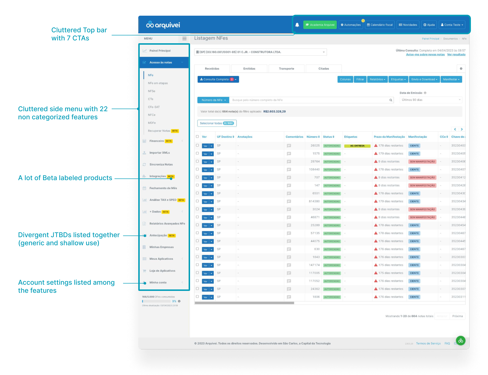
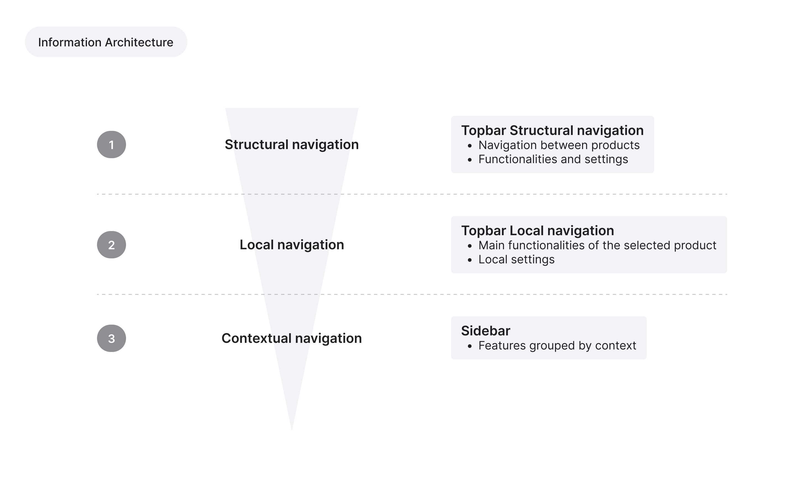
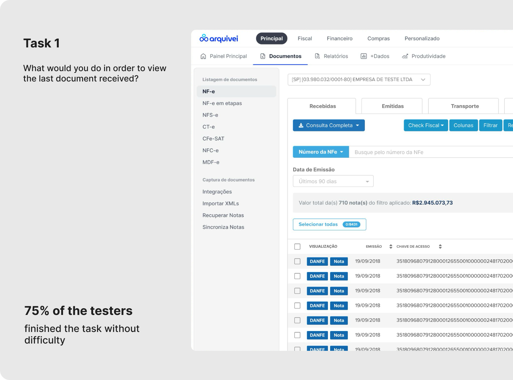
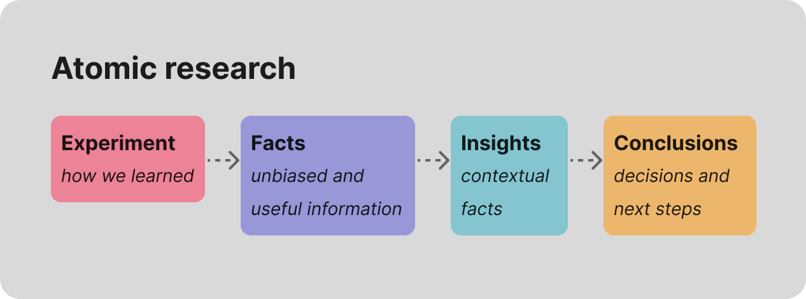

Overview
Qive (former Arquivei) is Brazil's largest fiscal document automation and management SaaS platform — serving over 75,000 business accounts and processing 30% of all B2B fiscal documents in the country across SMB and Enterprise segments.
As the platform expanded, the navigation evolved without a consistent structure. New modules were added independently by different teams, causing the experience to reflect the company's internal organization rather than the user's workflow.
By the time this initiative started
- Users struggled to locate features they already knew existed
- New users had difficulty discovering product value
- Navigation depth increased as new products were added
- Information architecture became increasingly fragile and difficult to scale
This was a design-led initiative. I identified the problem, framed the business case, and aligned product and engineering stakeholders around the need for structural change.
Because the redesign would affect every product entry point, we validated the proposal through usability testing before development started. The initiative later became part of the company's 2024 structural roadmap.
- The navigation reflected the company structure, not the user workflow
- Product growth was increasing structural complexity
- Scalability required a sustainable categorization model, not isolated UI fixes
Problem
The navigation issues were not visual — they were structural.
Users had to know what a feature was called to find it, instead of navigating based on what they were trying to accomplish.

Two main problems
- Existing users spent unnecessary time locating features
- New users failed to discover valuable functionality
For the business, every new feature added additional complexity to an already fragile system.
Goal
Design a navigation system organized around how users think about their work — while creating a scalable structure capable of supporting future product expansion.
- Improved feature findability
- Reduced navigation friction in key workflows
- Scalable information architecture for future products
Approach
Before proposing a new structure, we mapped the existing navigation patterns across the platform and analyzed how users interacted with the product in their daily workflows.
Models explored
The exploration considered multiple organizational approaches:
What we analyzed
- Navigation depth and feature discoverability
- Repeated user actions and most accessed flows
- Label clarity and interaction consistency across modules
One important finding was that no single categorization model fully reflected how users navigated the platform in practice. The final structure combined multiple principles:
This hybrid model created a structure that felt familiar to users while reducing friction for high-frequency operational tasks.
- Users navigated through a combination of operational context and repeated workflows
- Frequency of use strongly influenced perceived usability
- A hybrid navigation model reflected user behavior more accurately than a single organizational logic
The Decision

The role-based model created overlap and artificial boundaries, since multiple user profiles accessed the same features.
Document-type categorization worked for specific workflows, but failed in cross-functional scenarios.
The strongest model combined
- Jobs-to-be-done as the primary structure
- Document type as a secondary organizational layer where relevant
This approach aligned more closely with user mental models while creating a scalable framework for future expansion. The new information architecture allowed new features to be categorized according to what users were trying to accomplish — without requiring structural redesigns.
- Users navigate by goal, not by feature name
- Jobs-to-be-done created the most scalable categorization logic
- Secondary organization layers reduced complexity without increasing depth
Validating Before Building
Because the redesign introduced major structural changes, we validated the proposal through usability testing before implementation.
Working with limited time and budget, participants were recruited using product usage data in partnership with the Customer Success team. The study included both SMB and Enterprise users representing core usage patterns.
The prototype was built in Figma as a fully navigable experience. Instead of asking users to locate predefined features, tasks were framed around real goals:
This helped uncover how users actually think about navigation, rather than measuring memorization.

What testing revealed
The usability study exposed clear structural issues in the proposed hierarchy:
The proposed four-level depth improved top-level clarity but introduced friction for secondary workflows. These findings revealed that the structure was becoming too deep for task-oriented navigation.
From analysis to recommendations
To analyze results, we used the Atomic Research methodology — moving from observations to facts, facts to insights, and insights to recommendations. This prevented the team from reacting to isolated usability moments and created a defensible rationale for every design decision.

The findings directly informed iterations: labels were rewritten using user language instead of product terminology, two navigation clusters were restructured, and navigation depth was reduced for high-frequency secondary tasks.
- Structural clarity is not enough if navigation depth creates friction
- Testing early prevented flawed hierarchy decisions from reaching production
- User language consistently outperformed internal product terminology
Final Solution
The new navigation system introduced
- A more cohesive categorization framework
- Reduced top-level clutter
- Clearer entry points for new and experienced users
- Improved mobile responsiveness
- Scalable information architecture for future products

Design Handoff & Progressive Rollout
The rollout was implemented progressively — first released to 1,000 accounts with rollback access to the previous navigation, then adopted as the default structure for all new accounts. The categorization framework also became a reusable internal standard for future product additions, reducing ad-hoc information architecture decisions across teams.

- Structural UX decisions can directly support long-term product scalability
- Progressive rollout reduced organizational and technical risk
- Navigation should evolve as a reusable system — not as isolated interface changes
Results
Reflection
The hardest part of this project was not designing the interface — it was building alignment around structural change. Navigation affects every team, and stakeholders naturally wanted to preserve existing structures.
Making the case required reframing the problem in terms of scalability, feature discoverability, product expansion, and operational efficiency — rather than discussing it purely as a UX issue.
Takeaways
- Validate structural decisions early with users
- Navigation systems should scale with product growth, not react to it
- Information architecture is as much an organizational problem as a UX problem
- Performance and page loading are also part of the navigation experience
- Strong research synthesis creates better alignment across product and engineering teams
If I were to revisit this project, I would push earlier for quantitative baseline metrics — navigation path analysis, time-on-task, support ticket volume, and feature discovery metrics — to strengthen the business case and long-term impact measurement even further.